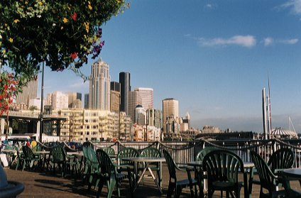
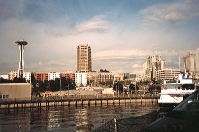
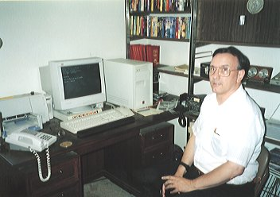
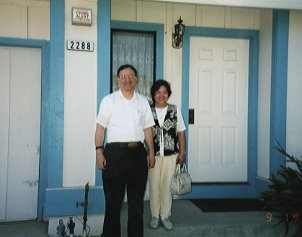
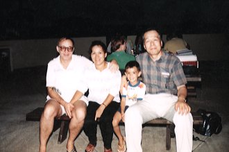

|
【カナダからアメリカへ】
今回は初めてカナダからアメリカへの旅行を計画してみました。
カナダのバンクーバーからアメリカまでの移動は当初飛行機を予定していたのですが、
9月はアメリカやカナダでは学生の新学期に当たり、全ての乗り物が混雑していて、
特に航空券を手に入れることが難しいことが分かりました。急遽、バスと飛行機を乗り継いで移動することになりました。
ブリティシュコロンビア州のバンクーバーは、アメリカの国境に近いため、バスで40分も走ればワシントン州に入る事が出来ます。
アメリカ・カナダではフリーウェイは整備されていて快適ですし、なによりも料金がタダなのがうらやましい。
今回の目的地はカリフォルニア州のサンフランシスコでしたが、まず、バスでワシントン州のシアトル市まで行き、
そこから飛行機に乗り換え、オレゴン州を飛び越えサンフランシスコに移動するルートです。
乗り継ぎさえうまく行けば、半日で目的地に到着出来るのですが、今回は"ノンビリ一人旅"なので、
途中のシアトルで一泊することにしました。半日の予定外のシアトルの市内観光を楽しむ事が出来ました。


途中で立ち寄った美しい港町、シアトル市。 シーフードの味は格別！
右の写真のタワーは、シアトル（Seattle）の名所、「スペース・ニードル」
【KG6JDXを訪問】
今回のサンフランシスコ訪問の目的は、市内観光のほかに、San Jose市在住のKG6JDX（Joe）に会うことでした。
KG6JDXとは1978年にGuamで会った後、1983年に米国のテキサス州ヒューストンで開催された、
「SMIRKの10周年記念コンベンション」で会って以来の再会でした。
サンフランシスコのホテルから電話して、スケジュールの打ち合わせしたときに、
「14年ぶりなので、もう顔を忘れてしまったでしょう」と聞いたところ、
「手配写真が、KazuのHomepageに出ているので分かるよ !」と言われてしまいました。
日本語だけの私のホームページでも、写真だけは判るので良くアクセスしているのだそうです。(英語のページが無くて、ゴメンナサイ)
JoeはGuamで使っていた時と同じIC-551D（100W）を現在も使っていますが、
ここではローカルの強い局が出てくるとインターフェアーに悩まされるとのことでした。
ガレージには1970年代にGuamで使っていた、SWAN-250のトランシーバーが大事に保管されていました。
Joeの家に着いてさっそく50MHzを聞いて見たのですが、50.069MHzのK6FVのビーコンが聞こえているだけで、
土曜日の午後というのにバンド内は案外静かでした。
サンフランシスコ近郊では、TVのチャンネルが2CH（55.25/59.75MHz）を使っているためTVIの心配があり、
市街地でのアクティビティは良くないのだそうです。
本格的にQRVしたい局は、山沿いのインターフェアーの少ない場所にQSYして出ているとのこと。
アメリカはケーブル・テレビ全盛で、TVIの問題は無いと思っていたのでこの話は意外でした。


KG6JDX・Joe（左）/奥さんと自宅の玄関前で
【San Jose（サンノゼ）市】
今回訪問したSan Jose市は、サンフランシスコの南約75Kmにあり、サンフランシスコ湾の最も南に位置するところ。
湾沿いの101号線と山沿いの280号線の、片側4-5車線の2本のフリーウェイでサンフランシスコのダウンタウンと結ばれているので、
車なら30分程で移動出来ます。
山沿いの280号線には、あのWA6LETの巨大アンテナで有名なスタンフォード大学があり、
フリーウエイからもこのディッシュ（パラボラ）アンテナを眺める事ができました。
この街は閑静な住宅地で、中心部を除き、高層の建物も少ない落ち着いたところです。

この街にはKG6JDXのほかに、昔GuamからQRVしていた、WH2ABO(Joe)、KG6JKS(Joe)親子も住んでいますが、
今回は会う機会がありませんでした。
今年(1997年)の春頃までは、以前GuamからアクティブだったKG6DX(Joe)も近くに住んでいたとのこと。
KG6DXはニューメキシコ州のアルバカーキ市にQSYしています。
この文章を読んで気が付かれたと思いますが、Guam関係の各局は、全て名前が"Joe"なのです。
Guam時代には、6ｍでQSOした各局を悩ませた"Joe軍団"でした。KG6DXの息子さんも"Joe"でしたので、
5人目の局になるところでした。
KG6DX・Joeの家族と。(右)JA1RJU(Guamで)
|